NOSSA SENHORA SE MANIFESTA
PRIMEIRA APARIÇÃO
Nesta mesma data, ou seja, no
dia 1º de Junho de 1947, às 3 horas e 15 minutos da madrugada, no quarto do
Hospital, aconteceu à primeira Aparição de NOSSA 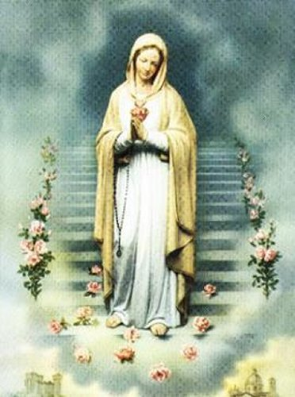
Do dia 11 de Junho até o dia 12 de Julho de 1947, recebeu quase que diariamente a visita da sua amiga, Santa Maria Crucificada Di Rosa, que sempre lhe dava sábios conselhos e lhe confortava.
A SEGUNDA APARIÇÃO
No dia 13 de Julho de 1947, NOSSA SENHORA trajava um vestido branco e lhe apareceu novamente numa Sala do Hospital, agora com três rosas no peito: uma branca, outra vermelha e a terceira, amarelo dourada. A VIRGEM MÃE ainda com a fisionomia triste, contemplou Pierina, que lhe perguntou:
- “Dizei-me, por favor, quem sois Vós”?
A VIRGEM sorriu e respondeu:
- “Sou a MÃE DE JESUS e de todos vós”. Fez uma pausa e depois prosseguiu: “O SENHOR Me enviou a fim de promover uma devoção mariana mais eficaz entre os Institutos e Congregações Religiosas, masculinos e femininos, e entre todos os Sacerdotes. Prometo a todos, os que mais me honrarem, a minha proteção, o florir das vocações, menos apostasias e sumo desejo de santidade nos ministros de DEUS. Desejo que o dia treze de cada mês seja considerado como Dia Mariano a consagrar as preces especiais que serão rezadas doze dias antes”.
Depois com expressão de alegria no rosto, continuou: “Nesse dia farei descer abundância de graças e santidade de vocações sobre quantos me honrarem. Desejo que o dia 13 de Julho de cada ano seja festejado em honra da ROSA MÍSTICA”.
Pierina perguntou a NOSSA SENHORA se queria demonstrar o seu poder com algum fato miraculoso? A VIRGEM MARIA respondeu:
- “O milagre mais evidente sucederá quando as almas consagradas, cujo espírito se relaxou, sobretudo na última guerra, com os seus graves castigos e perseguições, puserem termo às contínuas ofensas ao SENHOR, regressando ao espírito primitivo dos Santos Fundadores das Ordens Religiosas”.
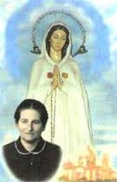
* A Primeira Espada simboliza a ruína da Vocação Sacerdotal e Religiosa;
* A Segunda, simboliza a vida pecaminosa de muitos sacerdotes;
* A Terceira, simboliza a semelhança da traição de Judas e o ódio contra a Igreja;
* A Rosa Branca, indica espírito de Oração;
* A Rosa Vermelha, indica espírito de sacrifício e de abnegação;
* A Rosa Amarelo Dourada, indica o espírito de penitência.
TERCEIRA APARIÇÃO
No dia 22 de Outubro de 1947, NOSSA SENHORA lhe apareceu novamente na Capela do Hospital, estando presente somente três pessoas, e entre elas, o Confessor de Pierina. A VIRGEM MARIA voltou a pedir a prática das devoções recomendadas e disse, entre outras coisas:
- “Coloco-Me, qual Medianeira, entre os homens e, em particular, entre as almas dos religiosos e o Meu Divino FILHO. ELE está cheio de tristeza com as ofensas que recebe diariamente e quer dar curso à Sua Justiça”.
Depois Nossa Senhora se despediu e desapareceu.
Como sempre acontece em casos semelhantes, os comentários sobre as Aparições se multiplicaram, inclusive dentro da própria Igreja havia divisões, e por isso mesmo, a Diocese providenciou para que Pierina fosse submetida a uma junta médica. Ela foi examinada e realizou diversos exames: sua saúde foi considerada boa.
QUATRO APARIÇÕES EM MONTICHIARI
NOSSA SENHORA continuou a sua Divina Missão, agora quis aparecer na Igreja Matriz de Montichiari, na presença de diversas pessoas e vários Sacerdotes.
A primeira, foi no dia
16/Novembro/1947 – Após a Santa Missa – Uma aparição estritamente pessoal. NOSSA
SENHORA pediu: “Pelos pecados
de impurezas 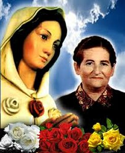
A segunda, foi no dia 22/Novembro/1947 – Aconteceu no período da tarde, quando a VIRGEM MARIA enviou uma Mensagem para o Papa Pio XII, e avisou: “No dia 8 de Dezembro, ao meio dia, será à Hora da Graça”. Pierina perguntou:“Que significa Hora da Graça”? NOSSA SENHORA respondeu: “Conversões em massa. Almas endurecidas, gélidas como o mármore, serão tocadas pela Graça Divina, tornando-se fiéis ao SENHOR e apaixonadas por ELE”.
A terceira aconteceu no dia 7/Dezembro/1947 – A MÃE DE DEUS apareceu com o Francisco e a Jacinta, videntes de Fátima. Entre diversas recomendações nossa MÃE SANTÍSSIMA pediu: “Propague-se nos Institutos Religiosos a Devoção a Rosa Mística”.
A quarta Aparição ocorreu no dia 8/Dezembro/1947 – Em face da sequência das Aparições, reuniu-se em Montichiari uma imensa multidão. Todos queriam assistir as Aparições e conhecer os avisos e recomendações da VIRGEM MÃE. Monsenhor Francesco Rossi, Pároco da Catedral, afirmou que apesar daquela multidão de pessoas, o silêncio era absoluto. Podia se ouvir o vôo de uma mosca. NOSSA SENHORA chegou e deixou uma linda Mensagem: “EU sou a IMACULADA CONCEIÇÃO, a MÃE DA GRAÇA, MÃE DO MEU DIVINO FILHO JESUS CRISTO. Desejo que todos os anos, no dia 8 de Dezembro, tenha lugar, ao meio dia, à HORA DA GRAÇA UNIVERSAL, com que se hão de obter numerosos favores para a alma e para o corpo. O SENHOR, o Meu Divino FILHO, concederá grande misericórdia, contanto que os bons não deixem de orar pelos seus irmãos pecadores. Comunicai ao Papa Pio XII, o Meu desejo de que esta HORA DA GRAÇA se difunda e seja praticada em toda a Terra. Os que não puderem ir a Igreja obterão as Graças desde que orem em suas casas”.
A Igreja estava repleta de uma imensa multidão e a reação das pessoas as palavras de NOSSA SENHORA foram de agradecimento e júbilo. Também aconteceram diversas curas milagrosas, atestando o carinho e o amor da VIRGEM MARIA por todos nós.
A DESCONFIANÇA DIOCESANA
Mas Pierina, coitada, atravessou um período triste e difícil, por que as autoridades da Cúria Diocesana foram muito severas com ela, inclusive a impediram de ter contato com a população. Afinal, eles não estavam acreditando nas Aparições, imaginando se tratar de algo muito bem encenado. Ela foi levada para um lugar distante, e, posteriormente, talvez no dia 23 ou 24 dezembro, por intervenção do seu Confessor Padre Luigi Bonomini, ela ficou hospedada no Instituto Feminino das Servas da Caridade, no Bairro Santa Cruz, em Bréscia, onde permaneceu três meses, sempre com a roupa de postulante.
PRIMEIRO INQUÉRITO
No principio de Janeiro de 1948 foi convocada a comparecer a uma junta de autoridades eclesiástica, e foi interrogada por uma comissão composta pelo Padre Agostinho Gazzoli, que era o Chanceler da Diocese, e que sempre foi contrário à autenticidade das aparições, o Bispo Dom Zani, o Bispo Dom Bosio, que era o Bispo de Chieti e Dom Bosetti, que era o Bispo de Fidenza. Ela também foi visitada por médicos psiquiatras. Depois de muita conversa a Comissão não conseguiu chegar a um denominador comum, por que havia opiniões que se contrastavam. E por isso, sem uma conclusão, Pierina foi exortada a viver isolada, contudo, sempre vestida com o hábito de postulante.
COM A SENHORA MARTINA
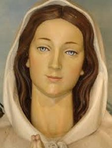
Permaneceu neste exílio até o final de Novembro, e sem dúvida, foi muito bem tratada pela senhora Martina, que se tornou sua verdadeira amiga. Entretanto sendo Pierina uma mulher de constituição muito frágil, sujeita a muitas doenças, teve algumas crises de cólica renal, que acabou sendo tratada com tranquilizantes, sem a presença de nenhum médico, a fim de que a sua verdadeira identidade não fosse descoberta. Era exigência da Cúria.
Ela sofreu muito, apesar das atenções e bondade da senhora Martina e de algumas aparições de Santa Maria Crucificada, que lhe visitava para consolar o seu coração, e curar algum mal em sua saúde, pela Vontade de DEUS.
SEGUNDO INTERROGATÓRIO
No final de 1949, a Cúria decidiu chamá-la novamente para novo interrogatório em Bréscia. Mas, até que se realizasse o encontro com as autoridades, ela foi forçada a permanecer na sua casa, perto da sua mãe e familiares, e suportar as humilhações mais incríveis, que pessoas pouco escrupulosas e sem fé, criticavam, blasfemavam e zombavam dela e dos seus parentes, chamando-a de louca e de histérica.
E por essa razão,
a Cúria decidiu colocá-la num lugar afastado e desconhecido, durante quarenta dias,
a disposição da Comissão Diocesana. Entretanto, as 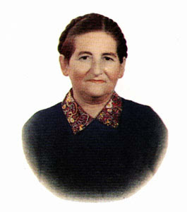
ESCRITO NO DIÁRIO
Por outro lado, não ficou muito claro se nesta oportunidade o senhor Bispo de Bréscia, Dom Jacinto Tredici, partilhou ou não, do parecer negativo da Comissão de Inquérito.
No seu Diário, Pierina escreveu: “Monsenhor Jacinto quando estava sozinho em sua sala, tinha para mim, palavras de conforto, me convidando a ser obediente e santa. Inclusive dizia que gostaria de saber mais sobre as minhas intenções. Eu lhe disse que tinha problemas de saúde e não sei para onde vou. Ele me aconselhou a não ficar em casa de pessoas, mas a me recolher a um Convento. Então, procurei muitos Conventos. Fui rejeitada em cada um deles, meu nome era um terror... Ninguém me queria.”
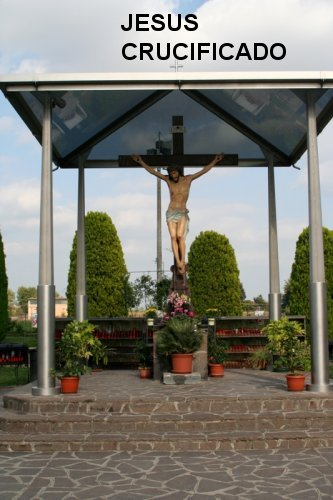
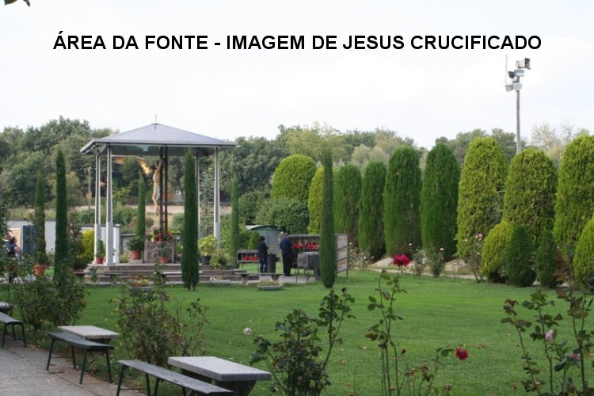
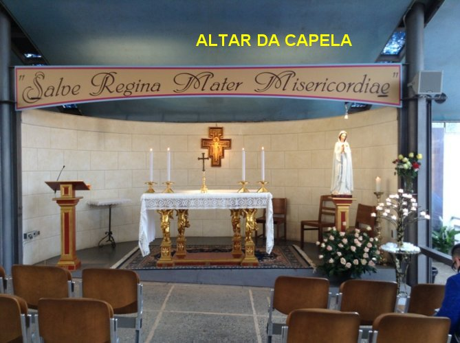
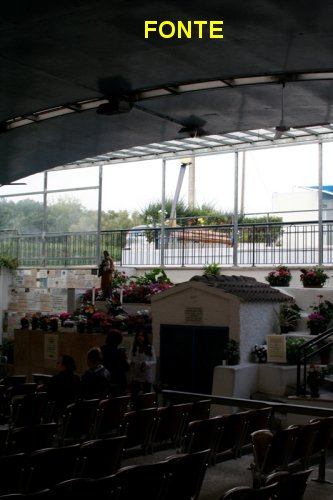
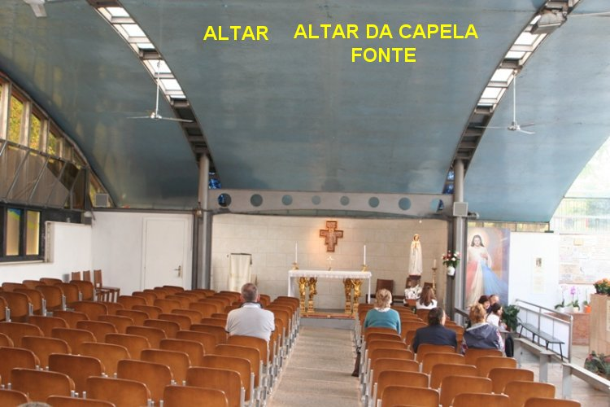
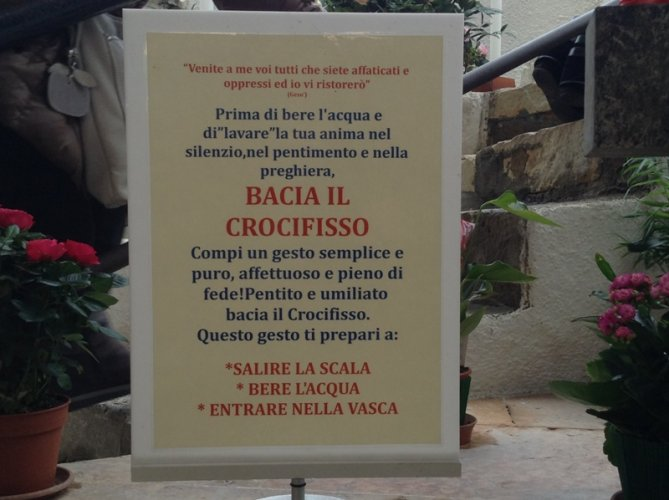
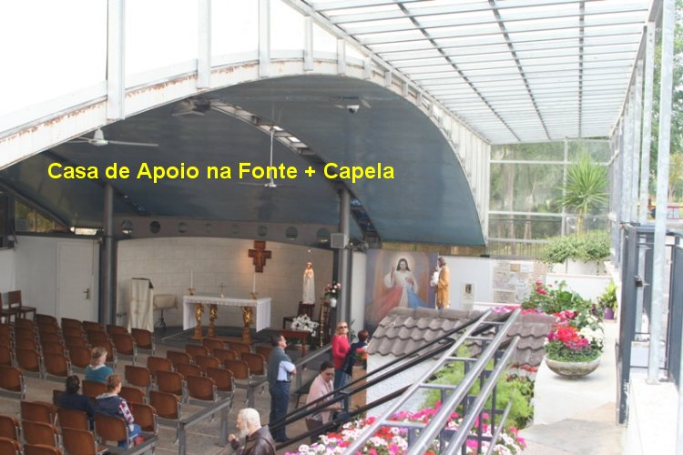
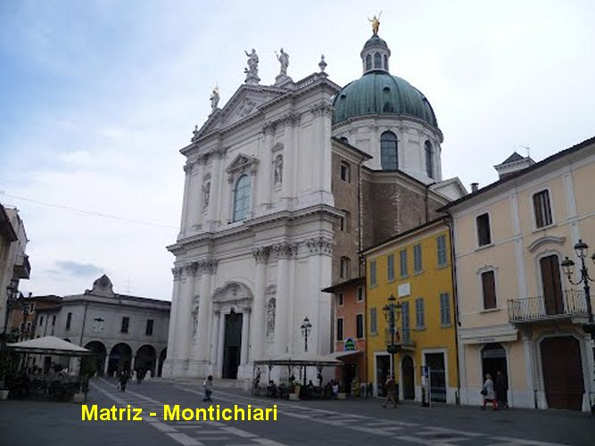